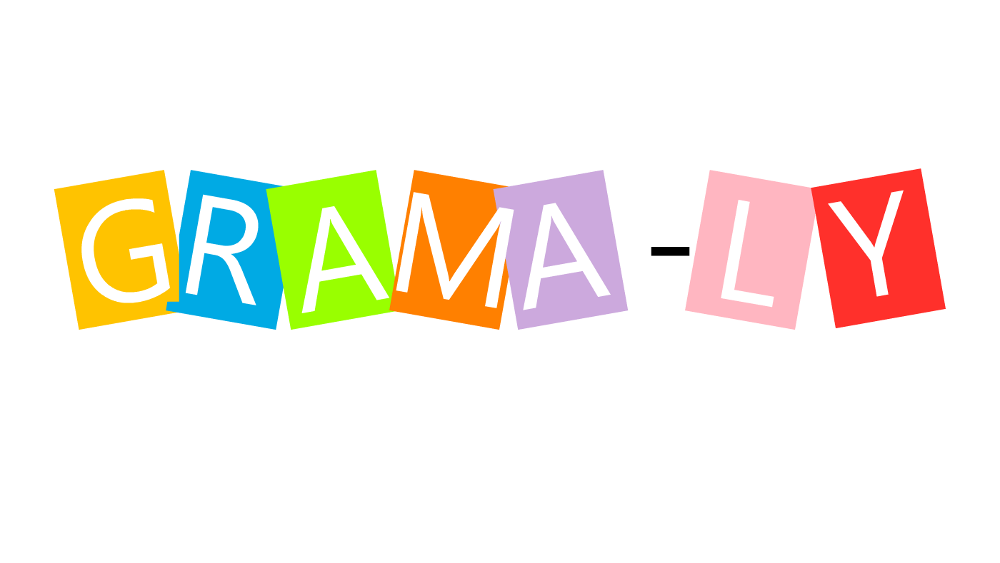

Casos de Éxito.
Gramaly(real)
Durante el periodo vacional en Febrero de 2021 nuestro compañero Yahir; Emprendedor de software de codificate, trabnjó de la mano del Centro de Integración juvenil Cuauhtemoc para desarrollar una aplicación de escritorio que sirvió como apoyo a una psicologa educativa para impartir un taller para mejorar la gramatica en niños pequeños. dadas los coondiciones de salud en el año anteriormente mencionado, los talleres del CIJ se han manejado de forma online por lo que fue una gran herramienta de trabajo y los niños han quedado encantados con todos los recursos que se utilizaron en el curso incluyendo la aplicación, no confundir con Grammarly.
Codyfood(real)
Durante el periodo escolar que abarcó del 28 de Septiempre del 2020 al 2 de Febreo del 2021 codificate realizó una aplicación de escritorio con destinada a la recomendación de alimentos en la communidad de popotla, se permitió realizar comentarios y hacer reportes sobre los negocios y comentarios, esto con el fín de crear una comunidad donde la gente pudira tomar una descición inteligente sobre que y donde comer.
inteligencia Artificial(Falso)
En una ocasión codificate decidió trabajar en una unteligencia artificial
la cual era una inteligencia artificial que fingía ser tu waifu y te decía senpai.
Esta inteligencia también agendaba tus tareas, te hacía recordatorios, te cantaba en las
noches y te celaba cuando pasabas mucho tiempo viendo anime.
También puedes desacargar nuestras extensiones de $10000
para personalizarla y si usas el código
SuperWaiufu300 te enviaremos una usb de 1 gb con la cara de tu waifu.
Codyrep(En proseso)
Dadas las condiciones de salud vividas en el año de 2020 y 2021, codificate
pensó siempre es apropiado hablar de salud por lo que decidieron lanzar una
aplicación web ecargada de informar acerca de diversidad sexual con el fín
de informar a la población sobre salud sexual y reproductiva, metodos de
prevención del embarazo, comunidad LGBT+.
La página también incluirá
una sección de Bitacora para el registro y control en cuestión de temas de
indole sexual, esto te permitirá crear un historial para llevar un control
acerca de tu vida sexual.
Juegos de escritorio.
Los miembros de Codificate han trabajo en un par de ocasiones en el desrrollo de juegos de escritorio
slgunos de los cuales se han desarrollado son: Damas polacas, Gato y Ahorcado.
Estos juegos cuentan con una interfaz llamativa e intuitiva que permiten a los
usuarios pasar horas de diversión.
Dentro de estos juegos se permite el registro de personas para conocer los puntajes según
haya ganadores, algunos de los juegos también permiten la selección de personajes con una
habilidad para poder ganar. Por ahora no se cuenta con versiones
online pero se pude usar zoom para jugar on tus amigos.

Facelook(Falso)
Facelook fue una red social de codificate cuya principal función era acercarte a quienes estaban lejos, tenía muchos anuncios y la gente se molestaba pero igual la usaban y eran adictos a ella, se podian subir fotos, pensamientos, videdos, hacer videollamadas y tener chats privados para hablar con tus amigos, también cuenta con grupos privados pero no es muy recomandable entrar ahí en especial en los de compra y venta.